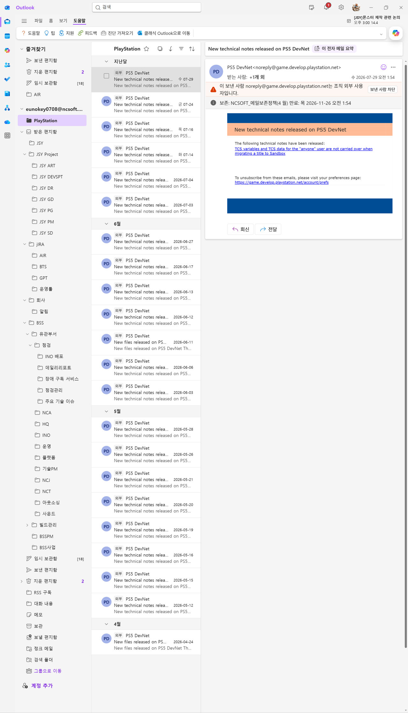
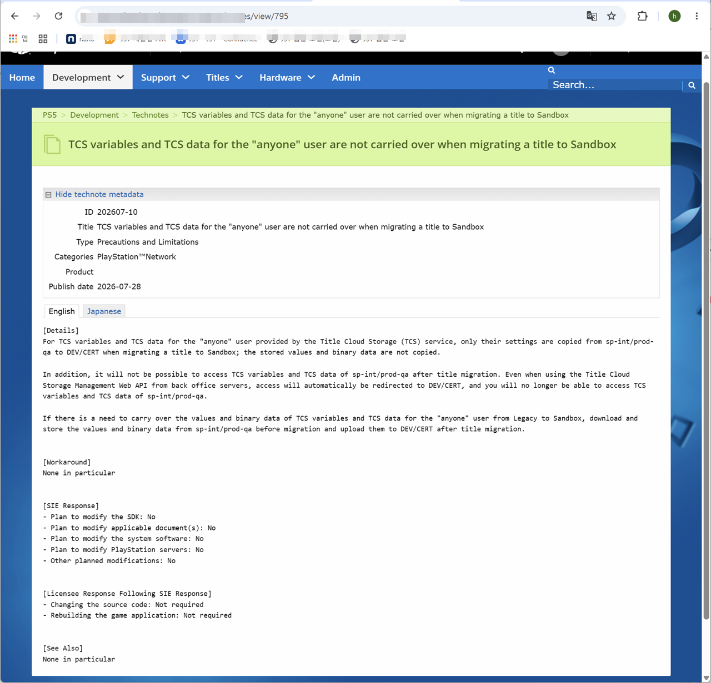
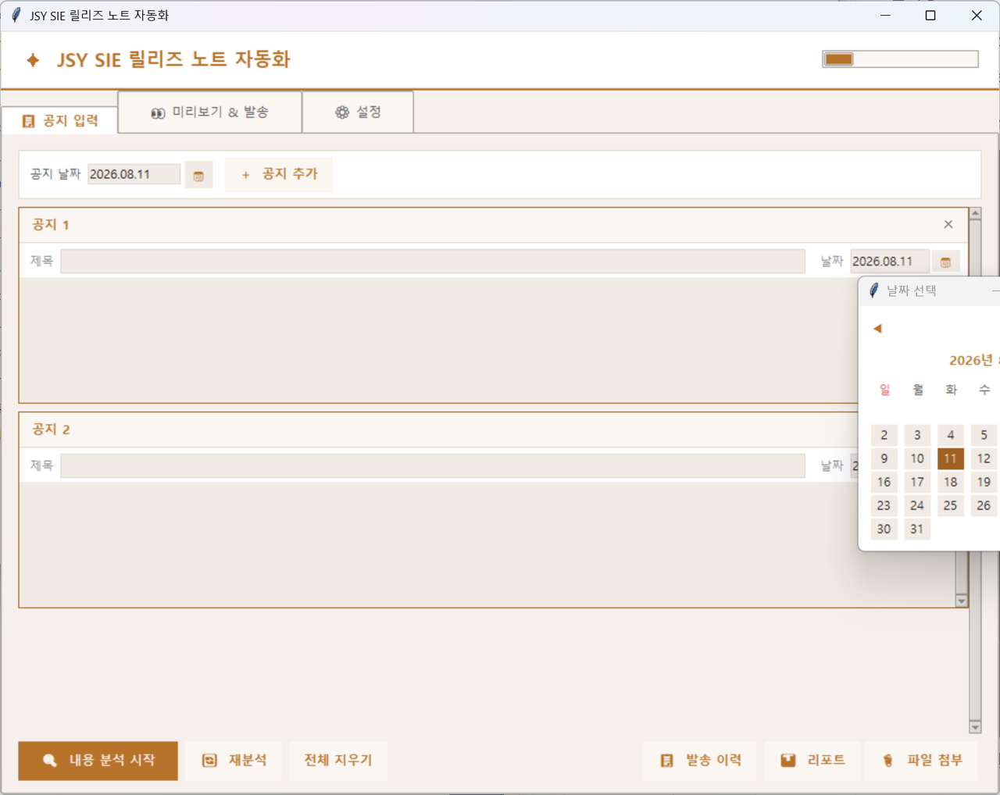
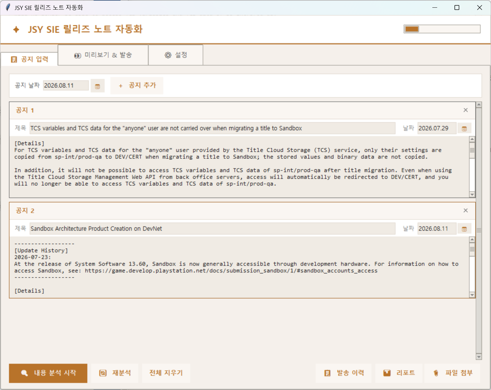
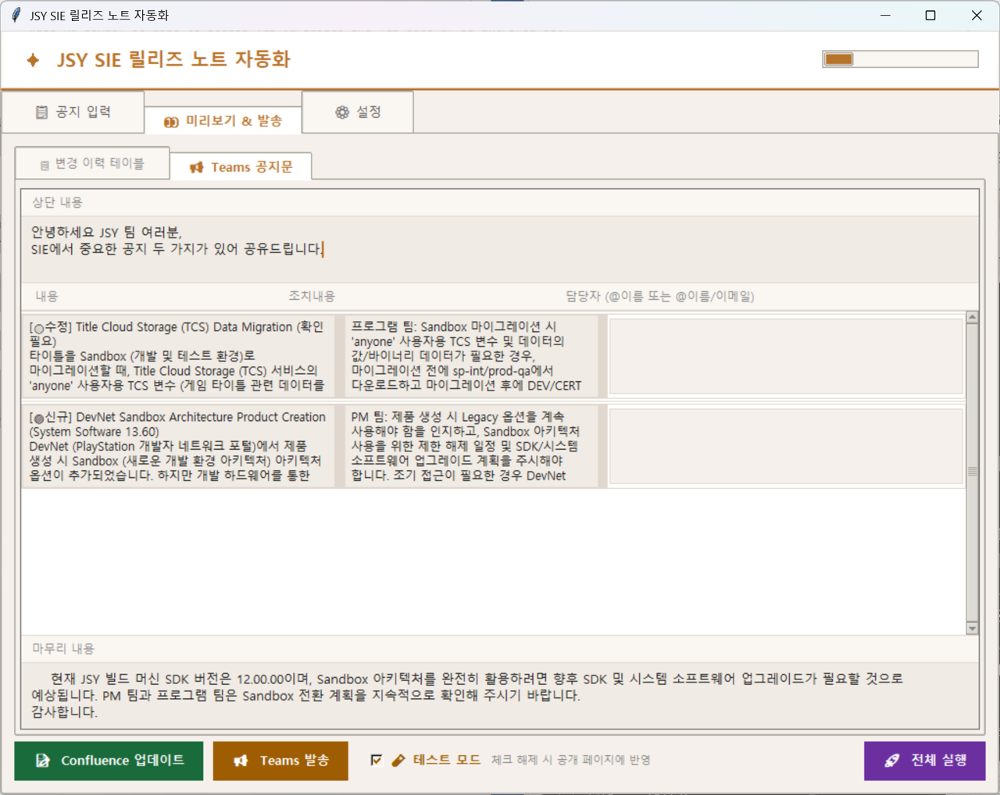
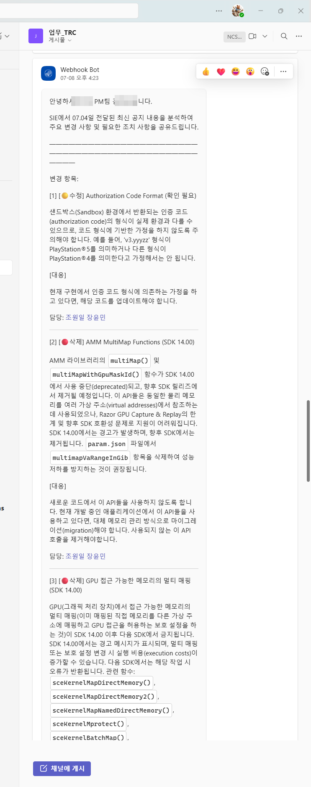
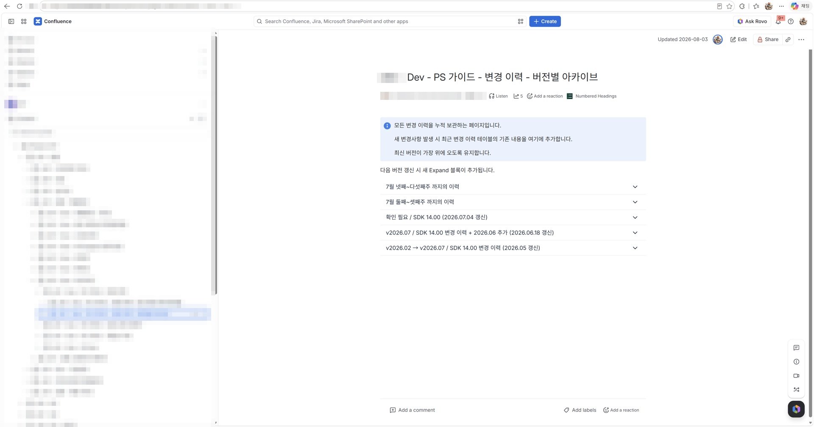

1
Problem · 문제 상황
영문 공지가 쏟아지는데, 전파는 수작업이었다
Sony Interactive Entertainment(SIE)는 SDK 업데이트, TRC 변경, PSN API 정책, 브랜드 가이드라인 변경 등 개발에 직결되는 공지를 수시로 발송합니다. 모두 영어 원문 + 개발자 전문 용어로 작성되어 있어, 담당자가 직접 읽고 번역·요약·전파까지 수작업으로 처리해야 했습니다.
공지 수십 건 수동 모니터링
월별 수십 건의 SIE 공지를 담당자가 직접 읽고 영향도를 판단해야 했습니다
수작업 번역·요약·전파
Confluence 업데이트와 Teams 공지를 매번 수작업으로 작성·발송했습니다
이력 관리 부재
과거 변경 이력이 체계적으로 쌓이지 않아 버전별 히스토리 파악이 어려웠습니다

Outlook에 수시로 날아오는 PS5 DevNet 공지들. 월별 수십 건이 쌓이며 각각 영향도 판단과 전파가 필요했습니다.

실제 SIE DevNet 영문 공지 원문. 전문 용어와 기술 맥락을 이해해야 우리 프로젝트 영향도를 판단할 수 있습니다.
2
Solution · 해결 방법
공지 붙여넣기 → 분석 → Confluence + Teams 원클릭
담당자가 공지 원문을 붙여넣으면 Gemini API가 내용을 분석하고, 변경 이력 테이블을 자동 생성하며, Confluence를 갱신하고, Teams에 담당자 멘션과 함께 공지를 발송합니다.
공지 원문 입력
→
Gemini API 분석
→
미리보기 확인·수정
→
Confluence 갱신
+
Teams 발송
영향도 자동 판단
현재 SDK 버전 기준으로 "즉시 영향 / 업그레이드 시 영향 / 해당 없음" 자동 분류
중복 공지 감지
유사도 기반으로 이미 처리한 공지를 감지해 재분석 시 사전 알림
Confluence 자동 갱신
최근 변경 이력 테이블 교체 + 이전 이력은 버전별 아카이브로 자동 이동
Teams 담당자 멘션
영역별 담당자 자동완성으로 멘션 설정 후 서식 있는 카드형 공지 발송

공지 입력 탭. 여러 공지를 카드 형태로 동시에 입력할 수 있습니다. "내용 분석 시작" 버튼 하나로 Gemini API 분석이 시작됩니다.

Gemini API가 분석한 변경 이력 테이블. 영역·버전·날짜·상태·변경 내용·영향 팀까지 자동으로 구조화되며, 미리보기에서 직접 수정할 수 있습니다.

Teams 공지문 미리보기. 항목별 내용·조치사항·담당자가 자동 채워지며, @이름으로 담당자 멘션을 설정할 수 있습니다.
3
Result · 결과
공지 전파 수작업이 사라지고, 이력이 자동으로 쌓이기 시작했다
담당자는 이제 공지 원문을 붙여넣고 미리보기를 확인하는 것만 합니다. Confluence 업데이트와 Teams 발송은 버튼 하나로 끝납니다. 버전별 아카이브가 자동으로 쌓이면서 과거 변경 이력도 자연스럽게 관리됩니다.
100%
공지 전파 수작업 제거
번역·요약·Confluence 업데이트·Teams 발송 전 과정 자동화
원클릭
전체 실행
Confluence 갱신 + Teams 발송을 "전체 실행" 버튼 하나로 처리
자동
버전별 아카이브
이전 변경 이력이 날짜 기반으로 자동 아카이브 페이지에 누적
실배포
사내 운영 중
실제 팀이 사용하는 환경에 배포되어 현재도 운영 중

실제 Teams 채널에 자동 발송된 공지. Webhook Bot이 담당자 멘션과 함께 변경 항목별 내용·조치사항을 구조화해서 전달합니다.

Confluence 최근 변경 이력 테이블 자동 갱신. TRC·PSN API·CertOps 영역별로 변경 내용·상태·영향 팀이 자동 정리됩니다.

버전별 아카이브 페이지. 새 변경 이력이 갱신될 때마다 이전 내용이 자동으로 접이식 블록으로 이동하며 날짜 기반 제목이 자동 생성됩니다.
Insight
"반복되는 수작업을 없애는 것보다 중요한 건, 그 자리에 이력이 자동으로 쌓이게 만드는 것입니다.
자동화 전에는 공지를 전파하고 나면 흔적이 없었지만, 이제는 버전별 아카이브가 자연스럽게 쌓여 과거 맥락을 언제든 찾을 수 있습니다."
자동화 전에는 공지를 전파하고 나면 흔적이 없었지만, 이제는 버전별 아카이브가 자연스럽게 쌓여 과거 맥락을 언제든 찾을 수 있습니다."